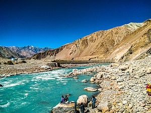
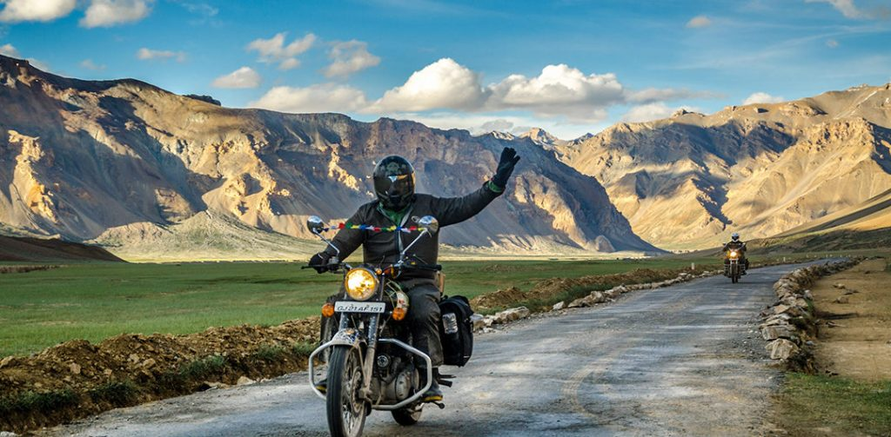

Ladakh (/ləˈdɑːk/)[11] is a region administered by India as a union territory,[1] which constitutes a part of the larger Kashmir region and has been the subject of dispute between India, Pakistan, and China since 1947.[2][3] Ladakh is bordered by the Tibet Autonomous Region to the east, the Indian state of Himachal Pradesh to the south, both the Indian-administered union territory of Jammu and Kashmir and the Pakistan-administered Gilgit-Baltistan to the west, and the southwest corner of Xinjiang across the Karakoram Pass in the far north. It extends from the Siachen Glacier in the Karakoram range to the north to the main Great Himalayas to the south.[12][13] The eastern end, consisting of the uninhabited Aksai Chin plains, is claimed by the Indian Government as part of Ladakh, and has been under Chinese control since 1962.
In the past Ladakh gained importance from its strategic location at the crossroads of important trade routes,[16] but as the Chinese authorities closed the borders between Tibet Autonomous Region and Ladakh in the 1960s, international trade dwindled. Since 1974, the Government of India has successfully encouraged tourism in Ladakh. As Ladakh is strategically important, the Indian military maintains a strong presence in the region.
The largest town in Ladakh is Leh, followed by Kargil, each of which headquarters a district.[17] The Leh district contains the Indus, Shyok and Nubra river valleys. The Kargil district contains the Suru, Dras and Zanskar river valleys. The main populated regions are the river valleys, but the mountain slopes also support the pastoral Changpa nomads. The main religious groups in the region are Muslims (mainly Shia) (46%), Buddhists (mainly Tibetan Buddhists) (40%), Hindus (12%) and others (2%).[18][19] Ladakh is one of the most sparsely populated regions in India. Its culture and history are closely related to that of Tibet.[20] Ladakh was established as a union territory of India on 31 October 2019, following the passage of the Jammu and Kashmir Reorganisation Act. Prior to that, it was part of the Jammu and Kashmir state. Ladakh is the largest and the second least populous union territory of India.
The classical name Tibetan: ལ་དྭགས, Wylie: La dwags, THL: la dak means the "land of high passes". Ladak is its pronunciation in several Tibetan dialects. The English spelling Ladakh is derived from Persian: ladāx.[21][22] The region was previously known as Maryul. Medieval Islamic scholars called Ladakh the Great Tibet (derived from Turko-Arabic Ti-bat, meaning "highland"); Baltistan and other trans-Himalayan states in Kashmir's vicinity were referred to as "Little Tibets".
Sheep grazing near Rangdum village; Shyok River in northern Ladakh
Leh-Ladakh is considered the Mecca for bikers and why not? It has the highest motorable road in the world and comprise of epic sceneries with unparalleled beauty. This is the reason why motorists not just from India but around the globe have this road trip in their bucket-list. So if you are planning for this road this riding season, then make sure you scroll through the below report thoroughly. And we will take you through everything necessary you need to plan out for the once in a lift time Leh-Ladakh motorcycle trip.
First thing you must make sure of is to find the right company for this tour. It is advisable that you do not embark on this journey alone as the terrain gets much challenging as you progress further into the hills. And it is always recommended that you have a crew of at least three to four riders who you can take along as a support.
Go to this website for your booking : Book now